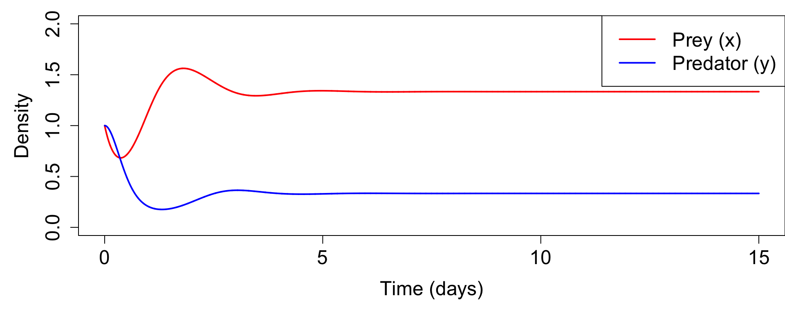
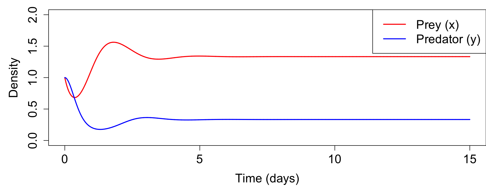
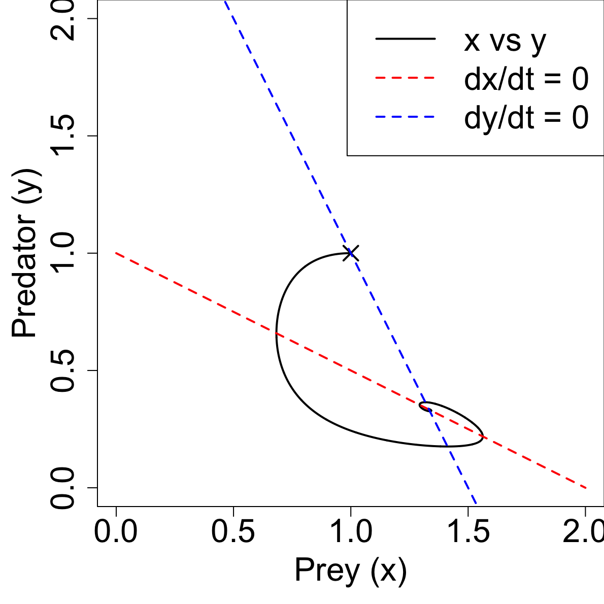

二元連立非線型常微分方程式系
\[ \begin{aligned} \frac{\mathrm{d}x}{\mathrm{d}t} &= x(a_1 + a_2x + a_3y) \\ \frac{\mathrm{d}y}{\mathrm{d}t} &= y(a_4 + a_5y + a_6x) \end{aligned} \]
| 変数 | 定義 | 単位 | 標準値 |
|---|---|---|---|
| \(x,\,y\) | 密度 | 数\(\,\mathrm{m}^{-2}\) | 計算 |
| \(a_1,\,a_4\) | 比増加率 | \(\mathrm{d}^{-1}\) | \(4,-6\) |
| \(a_2,\,a_5\) | 自己依存増加率 | \((\)数\(\,\mathrm{m^{-2}})^{-1}\mathrm{d}^{-1}\) | \(-2, 2\) |
| \(a_3,\,a_6\) | 相手依存増加率 | \((\)数\(\,\mathrm{m^{-2}})^{-1}\mathrm{d}^{-1}\) | \(-4, 4\) |
| \(x_1,\, y_1\) | 初期密度 | 数\(\,\mathrm{m}^{-2}\) | \(1, 1\) |
\[ \begin{aligned} \frac{\mathrm{d}x}{\mathrm{d}t} &= x(a_1 + a_2x + a_3y) \\ \frac{\mathrm{d}y}{\mathrm{d}t} &= y(a_4 + a_5y + a_6x) \end{aligned} \]
dt = 0.001, nmax = 15001

\[ \lambda_X = \lambda_X + \lambda_Z\frac{\partial F}{\partial X} \]
anmaxの1次元配列 xa の随伴変数は a をつけた長さ6の1次元配列 aax と y の随伴変数は、それぞれ ax と aya6 で微分する。ay を掛ける。a6 に足し込む。y が複数回出てきたら、それぞれ微分する。\[ \frac{\mathrm{d}y}{\mathrm{d}t} = y(a_4 + a_5y + a_6x) \]
\[ \frac{\mathrm{d}y}{\mathrm{d}t} = y(a_4 + a_5y + a_6x) \]
\[ \frac{\mathrm{d}x}{\mathrm{d}t} = x(a_1 + a_2x + a_3y) \]
\[ \frac{\mathrm{d}x}{\mathrm{d}t} = x(a_1 + a_2x + a_3y) \]
aa(:) = 0d0
ax(:) = 0d0
ay(:) = 0d0
do nmax-1, 1, -1
aa(6) = aa(6) + dt * x(n) * y(n) * ay(n+1)
aa(5) = aa(5) + dt * y(n) * y(n) * ay(n+1)
aa(4) = aa(4) + dt * y(n) * ay(n+1)
ax(n) = ax(n) + dt * a(6) * y(n) * ay(n+1)
ay(n) = ay(n) + dt * a(5) * y(n) * ay(n+1)
ay(n) = ay(n) + (1 + dt * (a(4) + a(5) * y(n) + a(6) * x(n))) * ay(n+1)
aa(3) = aa(3) + dt * y(n) * x(n) * ax(n+1)
aa(2) = aa(2) + dt * x(n) * x(n) * ax(n+1)
aa(1) = aa(1) + dt * x(n) * ax(n+1)
ay(n) = ay(n) + dt * a(3) * x(n) * ax(n+1)
ax(n) = ax(n) + dt * a(2) * x(n) * ax(n+1)
ax(n) = ax(n) + (1 + dt * (a(1) + a(2) * x(n) + a(3) * y(n))) * ax(n+1)
end doaa = np.zeros(6)
ax = np.zeros(nmax)
ay = np.zeros(nmax)
for i in reversed(range(nmax-1)):
aa[5] = aa[5] + dt * x[n] * y[n] * ay[n+1]
aa[4] = aa[4] + dt * y[n] * y[n] * ay[n+1]
aa[3] = aa[3] + dt * y[n] * ay[n+1]
ax[n] = ax[n] + dt * a[5] * y[n] * ay[n+1]
ay[n] = ay[n] + dt * a[4] * y[n] * ay[n+1]
ay[n] = ay[n] + (1 + dt * (a[3] + a[4] * y[n] + a[5] * x[n])) * ay[n+1]
aa[2] = aa[2] + dt * y[n] * x[n] * ax[n+1]
aa[1] = aa[1] + dt * x[n] * x[n] * ax[n+1]
aa[0] = aa[0] + dt * x[n] * ax[n+1]
ay[n] = ay[n] + dt * a[2] * x[n] * ax[n+1]
ax[n] = ax[n] + dt * a[1] * x[n] * ax[n+1]
ax[n] = ax[n] + (1 + dt * (a[0] + a[1] * x[n] + a[2] * y[n])) * ax[n+1]aa や ax、ayはコスト函数の初期勾配データ同化夏の学校2025